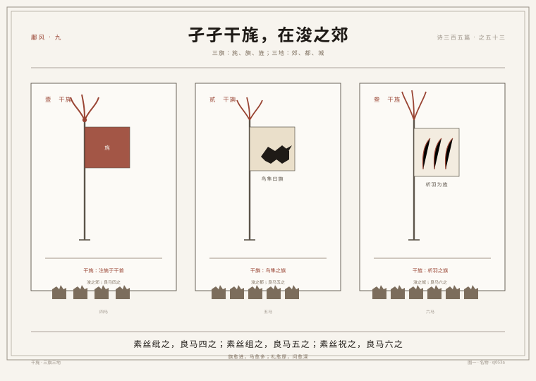
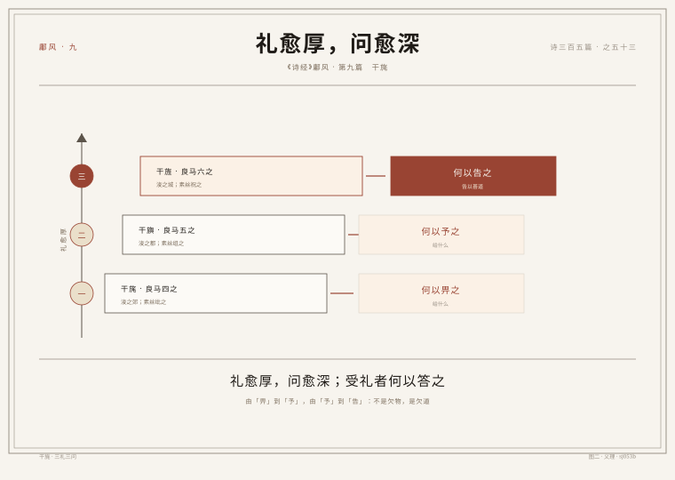

第五十三篇 干旄
鄘风 · 之九 SJ053
朗读 · 普通话
依经文正文朗读，句读从文；不配乐、不改速、不加拖腔。全库同一音色（豆包 TTS），非播音员录制。
一 解题
诗三判：
- 谁在说：卫人；一个旁观、赞美者。不是大夫自道，也不是贤者自夸。
- 说什么事：卫大夫建旗、驾四／五／六马，到浚之郊、都、城去见贤者；诗人替贤者问：拿什么答这份礼意？
- 为何编在此：鄘风第九篇。前八篇由守、讳、刺、桑间、名分、复国、止奔、无礼；此篇由「无礼」转到「好善礼贤」。礼的正面，不是约束，是敬。
《毛序》：「《干旄》，美好善也。卫文公臣子多好善，贤者乐告以善道也。」
朱子《诗集传》：「赋也。孑孑，特出之貌。干旄，以旄牛尾，注于旗干之首，而建之车后也。浚，卫邑名。邑外谓之郊。纰，织组也。盖以素丝织组而维之也。四之，两服两骖，凡四马以载之也。……言卫大夫乘此车马，建此旌旄，以见贤者。彼其所见之贤者，将何以畀之，而答其礼意之勤乎。」
本库的看法：这首诗的妙，在「何以畀之」：不是贤者问要什么，是诗人替贤者想——人家这样礼我，我拿什么答他？
礼尚往来，贤者也要有以答之。
二 经文
第一章
孑孑干旄，在浚之郊。素丝纰之，良马四之。彼姝者子，何以畀之？
第二章
孑孑干旟，在浚之都。素丝组之，良马五之。彼姝者子，何以予之？
第三章
孑孑干旌，在浚之城。素丝祝之，良马六之。彼姝者子，何以告之？
分章：三章，章六句。
章末韵：此诗以赋为主，韵散；三章以「旄／旟／旌」「郊／都／城」「四／五／六」「畀／予／告」四组递进为骨，不逐句强叶。
三 韵读
| 一 |
旄／郊／四／畀 |
旗、地、马、问四层 |
| 二 |
旟／都／五／予 |
同上，换字递进 |
| 三 |
旌／城／六／告 |
同上，至「告」而止 |
此诗不以韵胜，以四组递进为骨。读时不必逐句求韵，听其层层推进。
四 字义与名物
字义
- 孑孑（jié）——高扬特出之貌；毛传「干旄之貌」，朱子「特出之貌」。
- 干旄（gān
máo）——以旄牛尾注于旗杆之首的旗；大夫之旃。
- 浚（xùn）——卫邑；在今河南浚县一带。
- 郊 / 都 / 城——邑外为郊；下邑曰都；都城曰城。
- 素丝——白丝。
- 纰（pí）——织组、连缀；以素丝织组而维旗。
- 组——总以素丝而成组；编织。
- 祝——织、属、编连；一说厚积之状。
- 良马四之 / 五之 /
六之——四马／五马／六马；郑笺又读为「四见／五见／六见」。
- 姝（shū）——美好、柔顺。
- 畀（bì）——给、予。
- 予——给与。
- 告——告诉、告以善道。
名物
- 干旄 / 干旟 /
干旌——三旗：旄牛尾旗、鸟隼旗、析羽旗。
- 旟（yú）——鸟隼曰旟。
- 旌（jīng）——析羽为旌。
- 浚之郊 / 都 /
城——由郊入都，由都入城；礼愈近，愈厚。
五 今译
第一章
高高飘扬的旄旗，在浚邑的郊外。白丝织组系住它，四匹好马驾着车。那位美好的人，拿什么来答谢他？
第二章
高高飘扬的鸟隼旗，在浚邑的都邑。白丝编织系住它，五匹好马驾着车。那位美好的人，拿什么来赠予他？
第三章
高高飘扬的羽旌，在浚邑的城中。白丝编连系住它，六匹好马驾着车。那位美好的人，拿什么来告诉他？
六 章旨
一章：干旄在浚郊，素丝纰之，良马四之；问何以畀。
礼初至，问「给什么」。
二章：干旟在浚都，素丝组之，良马五之；问何以予。
礼愈近，问「与什么」。
三章：干旌在浚城，素丝祝之，良马六之；问何以告。
礼最厚，问「告什么」。
三章合看：旗愈进，马愈多，礼愈厚；问愈深：畀—予—告。
七 诗教
- 赋：直陈车马旌旗；赋而美，不夸而礼意自见。
- 观：观卫国大夫礼贤之风；也观「礼」的正面：不是约束，是敬。
- 群：可与「求贤若渴」的人同群；也可与「受礼而愧」的人同群。
- 怨：无怨，是美；但「何以」三问里有不安：受礼太重，怕无以为报。
八 分寸与边界
- 不可把「干旄」当普通旗。它是有旄牛尾的旗，礼贤之器；旗是礼的外形。
- 不可把「良马四之／五之／六之」当确数。毛、郑一为马数、一为见数；朱子主四马；不必死抠。
- 不可把「姝者子」当美女。它指贤者、美好之人；朱子「子，指所见之人」。
- 不可把「畀／予／告」当同义。畀是给物，予是给与，告是告以善道；一层深一层。
- 不可把「美好善」只当歌颂。诗有「何以」三问；礼贤不是单方面施与，是互相答。
九 存疑
- 诗旨与旧说：毛序「美好善」，谓卫文公臣子好善、贤者乐告以善道；朱子「卫大夫访贤」；现代或读为男女情诗。本库从毛、朱，旧说两存。
- 文字异文：「旄」与「旟」「旌」三章递进；「祝」或作「织」「属」；「畀」或作「予」；「姝」毛传「顺貌」，朱子「美也」。
- 名物歧解：干旄＝旄牛尾旗；干旟＝鸟隼旗；干旌＝析羽旗；浚＝卫邑；素丝＝白丝；良马四／五／六＝马数或见数。
- 年代与作者：诗无作者。毛序系卫文公；诗或美大夫之好贤；具体人无考。
- 编次之疑：为何在《相鼠》后？由「无礼」到「好善」；礼的反面既已刺，正面此篇立；也可能是卫俗组诗，《鄘风》篇次未必有严密义例。
十 跨典
- 《鄘风·相鼠》：前篇刺无礼，此篇美礼贤；一反一正。
- 《鄘风·定之方中》：前篇复国建宫室，此篇求贤；一建都，一礼贤。
- 《小雅·鹿鸣》：「我有嘉宾，鼓瑟吹笙。」礼贤；此篇以车马旌旗。
- 《论语·学而》：「礼之用，和为贵。」礼的正面；此篇以礼相敬。
- 《孟子·滕文公上》：「上好礼，则民莫敢不敬。」上好礼；此篇大夫好善。
- 《左传·僖公七年》：「招携以礼，怀远以德。」礼贤；此篇车马旌旗。
十一 双卡与图
双卡五对：
| 干旄（旄牛尾旗） |
干（干燥）旄（老人） |
| 浚（卫邑） |
疏浚（误） |
| 纰／组／祝（织组／编连） |
纰漏／组织／祝贺（误） |
| 良马四之（四马／四见） |
四匹好马（偏） |
| 畀／予／告（给／给／告以善道） |
畀（读「必」）；予（我）；告（告状）（误） |

图一 · 三旗三地：旄、旟、旌 名物图

图二 · 礼愈厚，问愈深 义理图
读图三处：
- 三旗：图一三格，干旄、干旟、干旌；旄牛尾、鸟隼、析羽，三种旗制。
- 三地：郊、都、城；由外入内，礼愈近。
- 三问：畀—予—告；由给物到给道，问愈深。